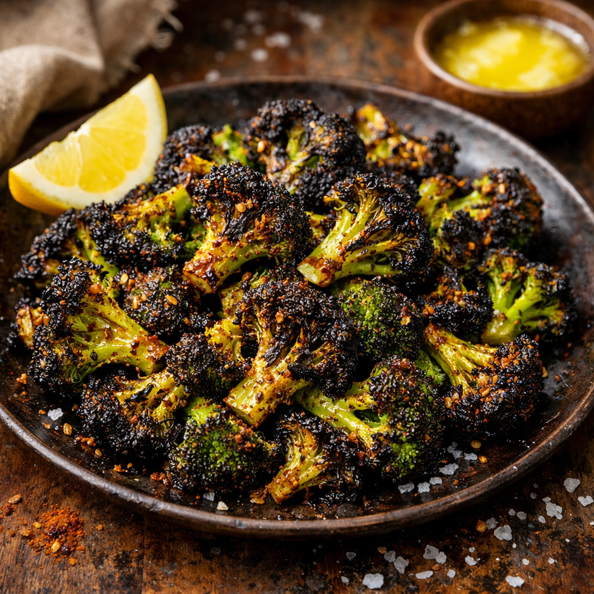

Burnt Brocolli

Description:
Burnt Broccoli is an intensely roasted vegetable dish featuring crispy, caramelized florets coated in warming spices like garlic, cumin, and chili powder. Roasted until the edges are deeply browned and crispy, it's a boldly flavored, naturally gluten-free side dish.
This dish is gluten free if you buy gluten free seasonings.
Ingredients:
- 4 Brocolli Crowns Cut into Small Florets
- 2 Tablespoons of Avocado Oil
- 1 Tablespoon of Ghee
- 3/4 Teaspoon of Fresh Lemon Juice
- 3/4 Teaspoon of Sea Salt
- 1/2 Teaspoon of Garlic Powder
- 1/4 Teaspoon of Chilli Powder
- 1/4 Teaspoon of Ground Cumin
- 1/4 Teaspoon of Onion Powder
- 1/8 Teaspoon of Ground Cinnamon
- 1/8 Teaspoon of Ground Corriander/li>
- 1/4 Teaspoon of Ground Pepper
Steps:
- Reheat the oven to 424F. Line a large rimmed baking sheet with Parchement Paper.
- Spread the florets out on the tray and drizzle with the avocado oil and lemon juice. Sprinkle the spices all over the broccoli. Toss to coat.
- Drop the tablespoon o ghee onto the center of the tray (it will melt when you put it in the oven).
- Roast the broccoli for 10 minutes.
- Toss the broccoli to spread the melted ghee around.
- Return to the oven and roast for another 15-18 minutes, until brown and crispy.
*Disclaimer: It is up to the cook to ensure that all of their ingredients are gluten-free and their workspace is free from contamination in order to ensure a gluten free state of the food.